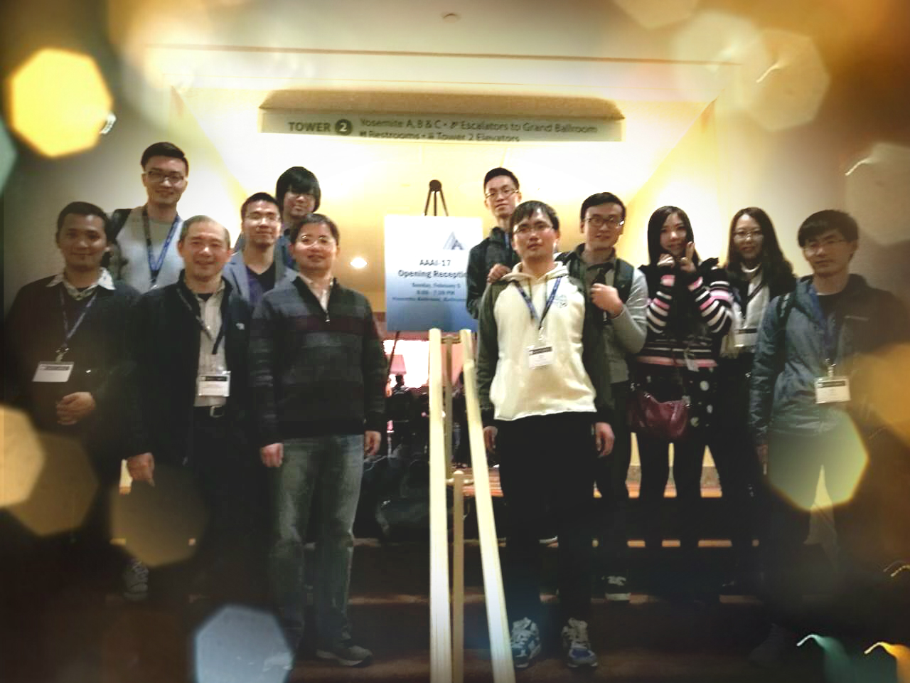

Ming Sun (孙明)
Kuaishou researcher, From 2021.3 to now
Sensetime researcher, From 2018.10 to 2021.3
BaiDu IDL intern and researcher, From 2016.11 to 2018.10
Bytedance (TouTiao) AI Lab intern, From 2016.5 to 2016.10
Email: m_sunming@163.com

Short Bio
From 2021, I am leading a outstanding group, about 20 researcher, which evaluate and promote the quality of user generated video on kuaishou.
I worked at SenseTime with Junjie Yan from 2018.11 to 2021.3, focus on object detection and Automl.
I worked at BaiDu IDL with Feng Zhou from 2016.11 to 2018.11 and learned a lot apart from tech.
Fortunately, I was supervised by prefessor JuFeng Yang and cooperated with MingMing Cheng.
And received the Master degree from Nankai University in 2017.
I was tech leader of the group, named 搜索与决策（inspired by exploration and exploitation), which focus on Detection（face/human/traffic/structure/keypoint/video） and Automl (augmentation/samping/loss/network auto search), about 20 researcher.
I am leading a group, which focus on UGC video quality assessment (KVQ, Kuaishou Video Quality, such as noise/blocky/color/dirtylens ) and processing algorithms (KEP & KRP, Kuaishou Enhancement & Restoration Processing, such as video deblur/SR/denoise ), about 20 researcher.
For further boosting the performance of KVQ and KEP & KRP, we develop detection/classification algorithms.
News:
- 通过大量的专家数据标注和模型改良，音视频质量领域大模型超过Golden eye. KVQ算法 .
- One paper, named QPT, was accepeted by CVPR 2023. 快手质量大模型 .
- 快手上线业界领先的端上画质超分算法，高端机AI方案+中端机ML方案. 软硬优化一体 .
- Three paper about transformer/nas were accepeted by ICCV 2021.
- One paper about Autosampling was accepeted by ICML 2021.
- Best autoaug code are available!.
- Another paper about autoaug were accepeted by NeurIPS 2020.
- Two paper about nas were accepeted by ECCV 2020.
- Two paper about nas and detection were accepeted by CVPR 2020.
- The team i lead get Dean Award （￥100,000）, which is the highest research reputation of sensetime .
- Another paper about nas-detection was accepeted by ICLR 2020.
- One paper about nas-detection was accepeted by NIPS 2019.
- Another paper about detection was accepted by ICCV 2019.
- We won 1rd of Traffic Anomaly Detection and 3rd of City-Scale Multi-Camera Vehicle Tracking in CVPR 2019.
- One paper on visual emotion recognition was accepted to TOMM.
- NIPS named CGNL code are available!.
- Another paper was accepted in NIPS 2018.
- One paper accepted in ECCV 2018 with oral.
- Large scale (10,000+ classes) flower classification service can avaiable in BaiDu APP, which build on knowledge graph and hundreds of millions data.
- We won 2rd flower and 3rd inaturalist in CVPR 2017 FGVC workshop.
- Got the Best New Artist and the Outstanding Project award in BaiDu IDL.
- One paper accepted in TMM 2018.
- Ming received National Scholarship for Graduate Students (￥20,000).
- Ming was named as Excellent Graduate, and received Outstanding Dissertations Award from Nankai University.
Publication
Capturing Co-existing Distortions in User-Generated Content for No-reference Video Quality Assessment.
Kun Yuan, Zishang Kong, Chuanchuan Zheng, Ming Sun , Xing Wen.
ACM MM, 2023. Sparse attention for VQA
Reconstructed Convolution Module Based Look-Up Tables for Efficient Image Super-Resolution.
Guandu Liu, Yukang Ding, Mading Li, Ming Sun , Xing Wen, Bin Wang.
ICCV, 2023.
Quality-aware Pre-trained Models for Blind Image Quality Assessment.
Kai Zhao, Kun Yuan, Ming Sun , Mading Li, Xing Wen.
CVPR, 2023. QPT with more data.
AutoSampling: Search for Effective Data Sampling Schedules.
Ming Sun , Haoxuan Dou, Baopu Li, Junjie Yan, Wanli Ouyang, Lei Cui.
ICML, 2021. Auto sampling firstly.
Evolving Search Space for Neural Architecture Search.
Yuanzheng Ci, Chen Lin, Ming Sun , Boyu Chen, Hongwen Zhang, Wanli Ouyang , Junjie Yan.
ICCV, 2021.
GLiT: Neural Architecture Search for Global and Local Image Transformer.
Boyu Chen, Peixia Li, Chuming Li, Baopu Li, Lei Bai, Chen Lin, Ming Sun , Junjie yan, Wanli Ouyang.
ICCV, 2021.
Inception Convolution with Efficient Dilation Search.
Jie Liu, Chuming Li, Feng Liang, Chen Lin, Ming Sun , Junjie Yan, Wanli Ouyang, Dong Xu.
CVPR, 2021, Oral . Simple conv for scale variance
IC-conv Code!
Improving Auto-Augment via Augmentation-Wise Weight Sharing.
Keyu Tian, Chen Lin, Ming Sun , Luping Zhou, Junjie Yan, Wanli Ouyang
NeurIPS, 2020. Best autoaug policy on Imagenet dataset
Autoaug Code!
Efficient Transfer Learning via Joint Adaptation of Network Architecture and Weight.
Ming Sun , Haoxuan Dou, Junjie Yan
ECCV, 2020. NAS for transfer learning first time!
Powering One-shot Topological NAS with Stabilized Share-parameter Proxy.
Ronghao Guo, Chen Lin, Chu ming Li, Keyu Tian, Ming Sun , Lu Sheng, Junjie Yan
ECCV, 2020. NAS for Topo
Large-Scale Object Detection in the Wild from Imbalanced Multi-Labels.
Junran Peng, Xingyuan Bu, Ming Sun , Junjie Yan
CVPR, 2020, Oral . Simple trick for OD
Improving One-shot NAS by Suppressing the Posterior Fading.
Xiang Li, Chen Lin, Chuming Li, Ming Sun , Wei Wu, Junjie Yan, Wanli Ouyang
CVPR, 2020.
Computation Reallocation for Object Detection.
Feng Liang, Ronghao Guo, Chen Lin, Ming Sun, Wei Wu, Junjie Yan, Wanli Ouyang
ICLR, 2020.
Efficient Neural Architecture Transformation Searchin Channel-Level for Object Detection.
Junran Peng, Ming Sun , Zhaoxiang Zhang, Tieniu Tan, Junjie Yan
NIPS, 2019.
POD: Practical Object Detection with Scale-Sensitive Network.
Junran Peng, Ming Sun , Zhaoxiang Zhang, Junjie Yan, Tieniu Tan
ICCV, 2019.
Learning discriminative sentiment representation from strongly- and weakly-supervised CNNs
Dongyu She, Ming Sun , Jufeng Yang
TOMM, 2019.
Multi-Attention Multi-Class Constraint for Fine-grained Image Recognition
Ming Sun, Yuchen Yuan, Feng Zhou, Errui Ding
ECCV, 2018, Oral .
Compact Generalized Non-local Network
Kaiyu Yue, Ming Sun, Yuchen Yuan, Errui Ding,Fuxin Xu, Feng Zhou
NIPS, 2018.
CGNL Code!
Visual Sentiment Prediction based on Automatic Discovery of Affective Regions
Jufeng Yang, Dongyu She, Ming Sun, Ming-Ming Cheng, Paul L. Rosin, Liang Wang
IEEE Transactions on Multimedia (TMM), 2018.
Learning Visual Sentiment Distributions via Augmented Conditional Probability Neural Network
Jufeng Yang, Ming Sun, Xiaoxiao Sun
AAAI Conference on Artificial Intelligence (AAAI), 2017.
Dataset is available!
Joint Image Emotion Classification and Distribution Learning via Deep Convolutional Neural Network
Jufeng Yang, Dongyu She, Ming Sun
International Joint Conference on Artificial Intelligence (IJCAI), Oral ,2017.
A Benchmark for Automatic Visual Classification of Clinical Skin Disease Images
Xiaoxiao Sun, Jufeng Yang, Ming Sun, Kai Wang
European Conference on Computer Vision (ECCV), 2016.
Project Homepage
Shape-Guided Segmentation for Fine-Grained Visual Categorization
Ming Sun, Jufeng Yang, Bo Sun, Kai Wang
IEEE International Conference on Multimedia and Expo (ICME), 2016, Oral .
Discovering Affective Regions in Deep Convolutional Neural Networks for Visual Sentiment Prediction
Ming Sun, Jufeng Yang, Kai Wang, Hui Shen
IEEE International Conference on Multimedia and Expo (ICME), 2016.